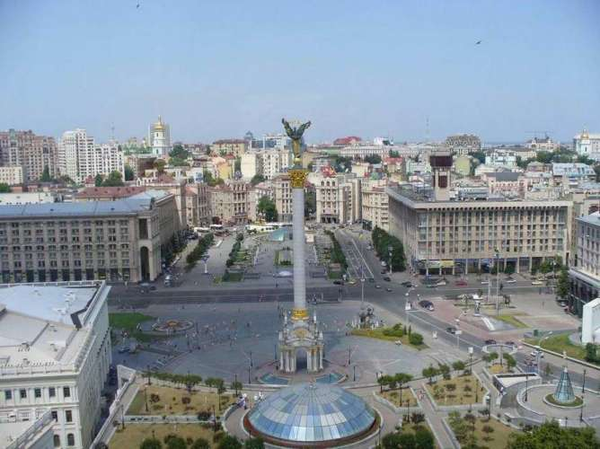
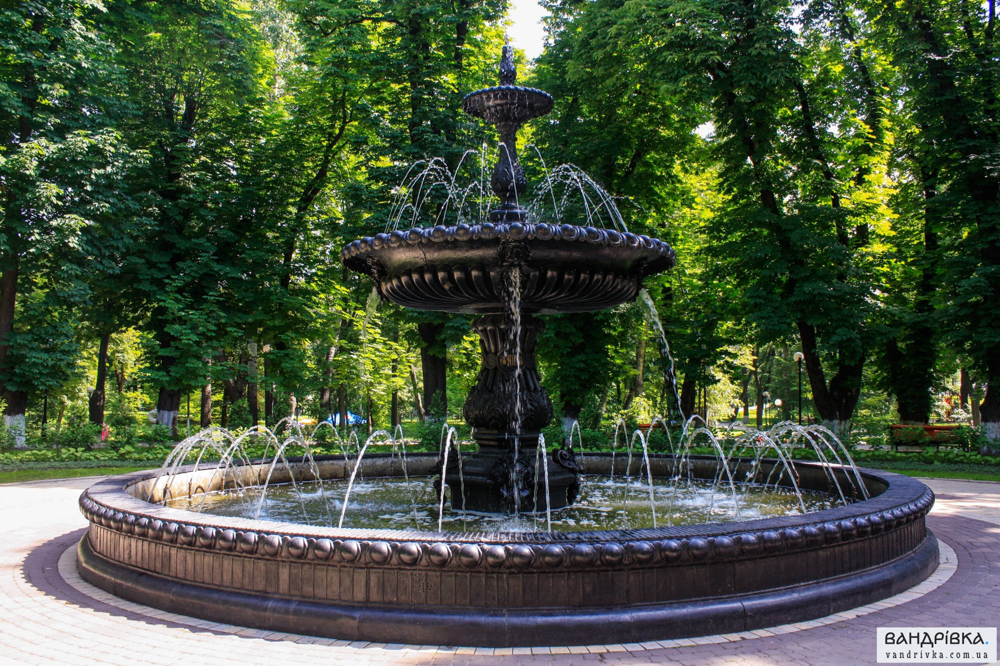
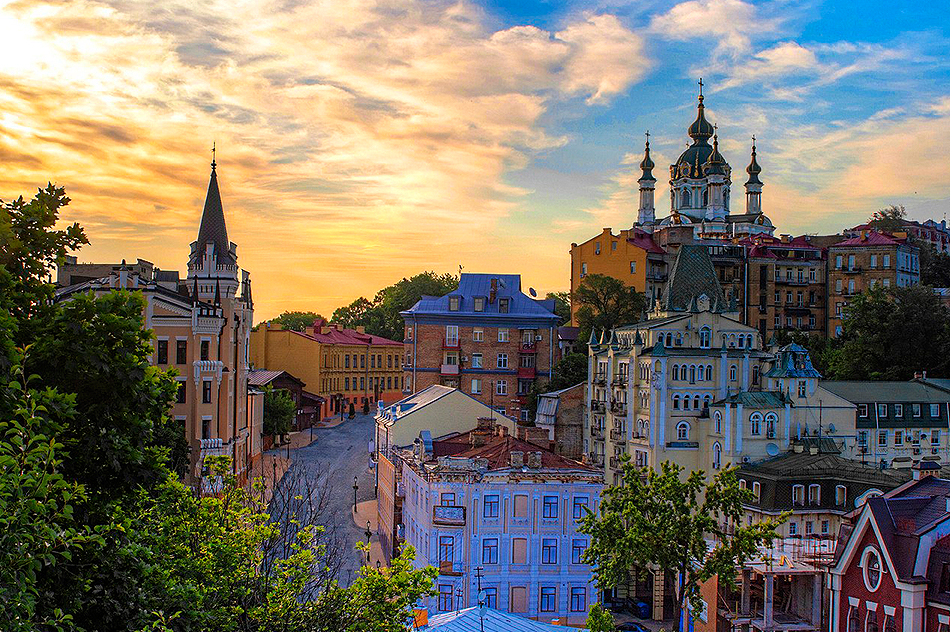

Visit Maidan Nezalezhnosti
The central square of Kyiv, known for its historical significance and vibrant atmosphere.
Your Tour Guide
Hi! I'm Andrii, your local guide. Let me show you the best spots in Kyiv!

Relax in Mariinsky Park
A beautiful park offering scenic views, walking paths, and a peaceful atmosphere in the heart of the city.
Explore Kyiv Pechersk Lavra
A historic Orthodox Christian monastery with stunning architecture and beautiful views of the city.

Stroll Along Andriyivskyy Descent
A picturesque street filled with art galleries, shops, and cafes, perfect for a leisurely walk.

Discover the National Opera House
Experience world-class performances in a stunning architectural setting.